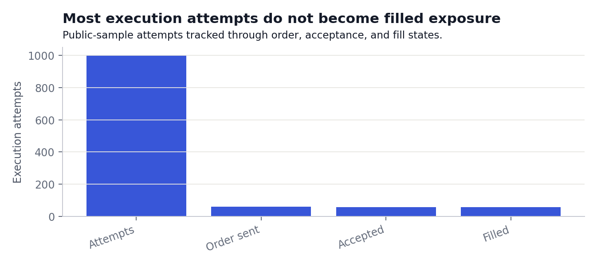
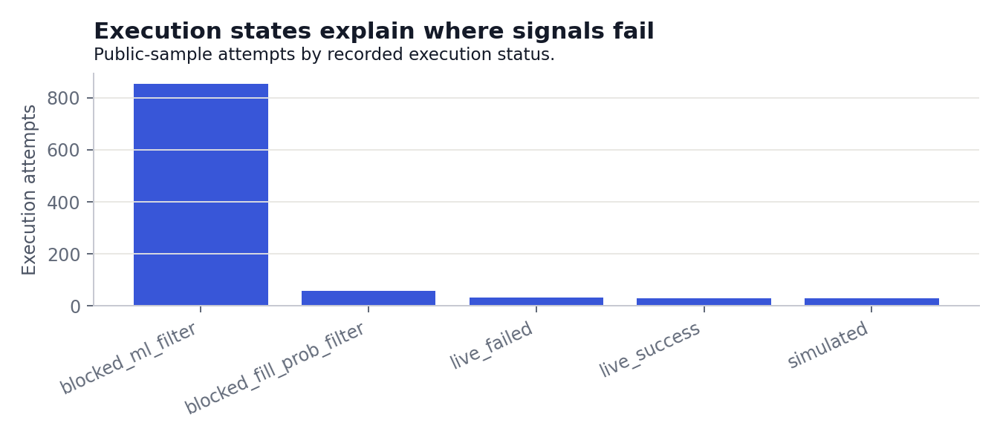
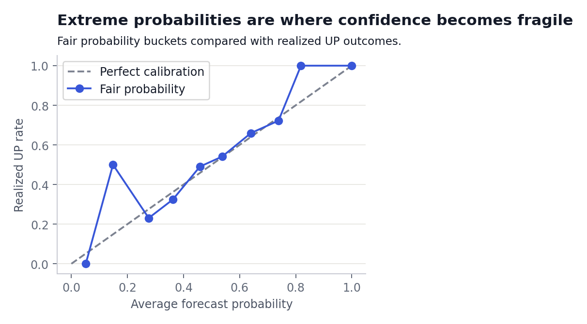

Apparent edge
Tick replay can identify theoretical mispricing.
It does not establish that the price is executable.
Public research project
Testing whether apparent short-horizon prediction-market edge survives spread, latency, fill probability, and settlement.
Read the public reports
Evidence summary
The findings are sample-backed diagnostics, not live-performance claims.
Tick replay can identify theoretical mispricing.
It does not establish that the price is executable.
Many signals fail before they become filled exposure.
Spread is only one of several failure points.
Extreme probability buckets are less stable in the public sample.
Sparse observations make tail confidence fragile.
The sample does not show reliable realized PnL.
Public data is anonymized and downsampled.
What the evidence shows
These figures are generated from anonymized public samples. They are not live trading performance or a complete historical backtest.


Research method
The public workflow uses anonymized samples while excluding wallets, order identifiers, private ledgers, model artifacts, and live execution systems.
Read the full methodologyAnonymized candidates, executions, settlements, and ticks.
Reference price, volatility, and time-to-resolution assumptions.
Compare estimated fair probability with market-implied probability.
Inspect spread, latency, fills, rejected orders, and settlement.
Export reproducible reports, notebooks, figures, and dashboard views.
Explore and reproduce
Scope and limitations
This is not financial, trading, or investment advice. The project does not claim to predict BTC, provide a profitable strategy, or operate a live trading or betting system.
Public outputs use anonymized, downsampled samples and should not be interpreted as complete historical empirical performance.
Review all limitations